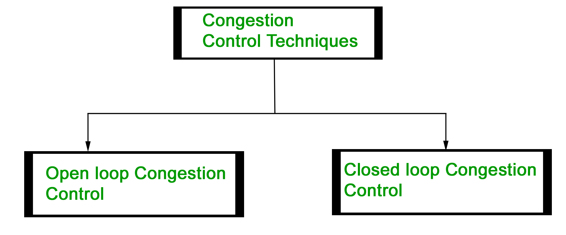
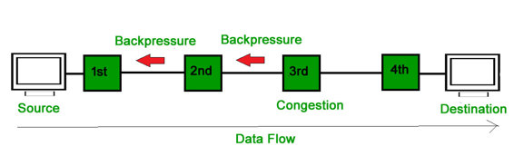
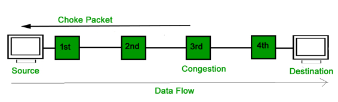

Congestion control refers to the techniques used to control or prevent congestion. Congestion control techniques can be broadly classified into two categories:

Open Loop Congestion Control
Open loop congestion control policies are applied to prevent congestion before it happens. The congestion control is handled either by the source or the destination.
Policies adopted by open loop congestion control –
- Retransmission Policy :
It is the policy in which retransmission of the packets are taken care. If the sender feels that a sent packet is lost or corrupted, the packet needs to be retransmitted. This transmission may increase the congestion in the network.
To prevent congestion, retransmission timers must be designed to prevent congestion and also able to optimize efficiency. - Window Policy :
The type of window at the sender side may also affect the congestion. Several packets in the Go-back-n window are resent, although some packets may be received successfully at the receiver side. This duplication may increase the congestion in the network and making it worse.
Therefore, Selective repeat window should be adopted as it sends the specific packet that may have been lost. - Discarding Policy :
A good discarding policy adopted by the routers is that the routers may prevent congestion and at the same time partially discards the corrupted or less sensitive package and also able to maintain the quality of a message.
In case of audio file transmission, routers can discard less sensitive packets to prevent congestion and also maintain the quality of the audio file. - Acknowledgment Policy :
Since acknowledgement are also the part of the load in network, the acknowledgment policy imposed by the receiver may also affect congestion. Several approaches can be used to prevent congestion related to acknowledgment.
The receiver should send acknowledgement for N packets rather than sending acknowledgement for a single packet. The receiver should send a acknowledgment only if it has to sent a packet or a timer expires. - Admission Policy :
In admission policy a mechanism should be used to prevent congestion. Switches in a flow should first check the resource requirement of a network flow before transmitting it further. If there is a chance of a congestion or there is a congestion in the network, router should deny establishing a virtual network connection to prevent further congestion.
All the above policies are adopted to prevent congestion before it happens in the network.
Closed Loop Congestion Control
Closed loop congestion control technique is used to treat or alleviate congestion after it happens. Several techniques are used by different protocols; some of them are:
- Backpressure :
Backpressure is a technique in which a congested node stop receiving packet from upstream node. This may cause the upstream node or nodes to become congested and rejects receiving data from above nodes. Backpressure is a node-to-node congestion control technique that propagate in the opposite direction of data flow. The backpressure technique can be applied only to virtual circuit where each node has information of its above upstream node.

In above diagram the 3rd node is congested and stops receiving packets as a result 2nd node may be get congested due to slowing down of the output data flow. Similarly 1st node may get congested and informs the source to slow down.
- Choke Packet Technique :
Choke packet technique is applicable to both virtual networks as well as datagram subnets. A choke packet is a packet sent by a node to the source to inform it of congestion. Each router monitor its resources and the utilization at each of its output lines. whenever the resource utilization exceeds the threshold value which is set by the administrator, the router directly sends a choke packet to the source giving it a feedback to reduce the traffic. The intermediate nodes through which the packets has traveled are not warned about congestion.
 - Implicit Signaling :
In implicit signaling, there is no communication between the congested nodes and the source. The source guesses that there is congestion in a network. For example when sender sends several packets and there is no acknowledgment for a while, one assumption is that there is a congestion. - Explicit Signaling :
In explicit signaling, if a node experiences congestion it can explicitly sends a packet to the source or destination to inform about congestion. The difference between choke packet and explicit signaling is that the signal is included in the packets that carry data rather than creating different packet as in case of choke packet technique.
Explicit signaling can occur in either forward or backward direction.- Forward Signaling : In forward signaling signal is sent in the direction of the congestion. The destination is warned about congestion. The reciever in this case adopt policies to prevent further congestion.
- Backward Signaling : In forward signaling signal is sent in the opposite direction of the congestion. The source is warned about congestion and it needs to slow down.
References :
nptel.ac.in
www.idc-online.com